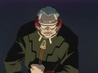
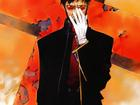

基路.洛伦兹
德国人，SEELE及人类补完委员会的首脑人物，与另外十一个委员一起对碇原度进行监视和下达所有命令，在幕后操纵着NERV。

碇源度
碇源度是NERV司令官，碇真嗣的父亲，也是整个“人类补完计划”和EVA研究计划的负责人。
真希波·玛丽·伊兰崔亚斯
真希波·玛丽·伊兰崔亚斯，是EVA新剧场版中新加入的角色。EVA驾驶员之一，驾驶过EVA临时五号机，EVA二号机。
加持良
NERV特殊监察部所属成员，带着明日香，二号机回到日本，他其实具有双重身份，既是NERV特殊监察部成员，也是SEELE派来调查的间谍。